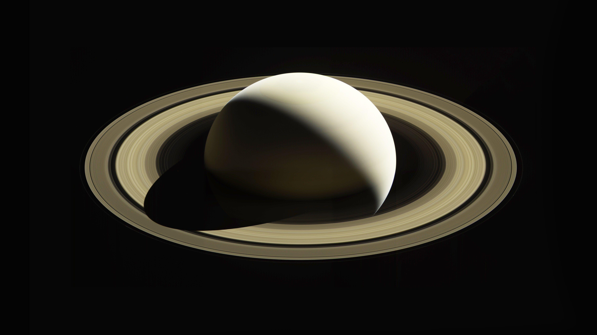

| Saturn is the sixth planet from the Sun and the second largest in the Solar System, after Jupiter. It is a gas giant, with an average radius of about 9 times that of Earth. It has an eighth of the average density of Earth, but is over 95 times more massive. Even though Saturn is almost as big as Jupiter, Saturn has less than a third of its mass. Saturn orbits the Sun at a distance of 9.59 AU (1,434 million km), with an orbital period of 29.45 years. |